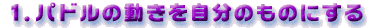
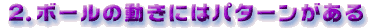

+ボタンを押しているときの、パドルが動く速さを早くつかもう。

ボールがブロックや壁に当たり、はね返ってくるときの角度は当たったときと同じです。その動きを予想しておくとパドル操作が楽です。
ゲームになれて余裕が出てきたら、A・Bボタンをうまく使うのがコツ。ボールの動きとパドルの速度をうまくあわせると、ねらった方向にボールを弾き返せます。
要は集中力と反射神経です。あわてずに落ち着いてボタンを操作してください。
攻略テクニック
●●●
ウルトラ小技ヒント
●●●
ゲーム画面